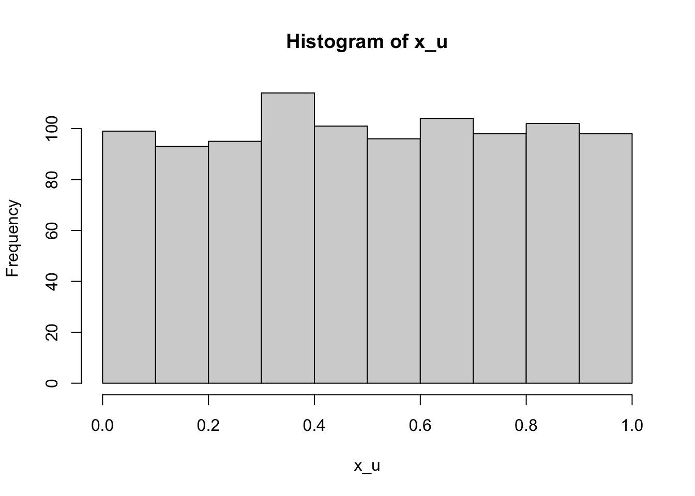
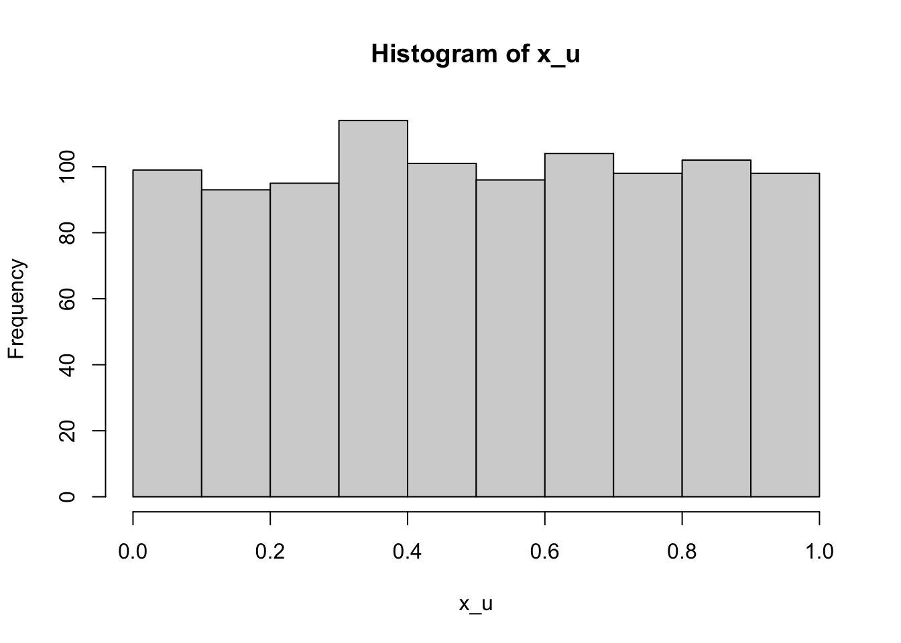

#=== uniform ===#
x_u <- runif(1000)
head(x_u)[1] 0.95702954 0.02058374 0.98662064 0.30995780 0.19438749 0.86957748hist(x_u)
Monte Carlo (MC) simulation is an important tool to test econometric hypothesis numerically and it is highly desirable that you can conduct your own MC simulations that fit your need. Suppose you are interested in learning whether the OSL estimator of a simple linear-in-parameter model is unbiased when the error term is correlated with one of the explanatory variables. Well, it has been theoretically proven that the OLS estimator is biased under such a data generating process. So, we do not really have to show this numerically. But, what if you are facing with a more complex econometric task for which the answer is not clear for you? For example, what is the impact of over-fitting the first stage estimations in a double machine learning approach to the bias and efficiency of the estimation of treatment effect in the second stage? We can partially answer to this question (though not generalizable unlike theoretical expositions) using MC simulations. Indeed, this book uses MC simulations often to get insights into econometric problems for which the answers are not clear or to just confirm if econometric theories are correct.
It is important to first recognize that it is impossible to test econometric theory using real-wold data. That is simply because you never know the underlying data generating process of real-world data. In MC simulations, we generate data according to the data generating process we specify. This allows us to check if the econometric outcome is consistent with the data generating process or not. This is the reason every journal article with newly developed statistical procedures published in an econometric journal has MC simulations to check the new econometric theories are indeed correct (e.g., whether the new estimator is unbiased or not).
Here, we learn how to program MC simulations using very simple econometric examples.
To create a dateset, we use pseudo random number generators. In most cases, runif() and rnorm() are sufficient.
#=== uniform ===#
x_u <- runif(1000)
head(x_u)[1] 0.95702954 0.02058374 0.98662064 0.30995780 0.19438749 0.86957748hist(x_u)
#=== normal ===#
x_n <- rnorm(1000, mean = 0, sd = 1)
head(x_n)[1] -1.3008563 1.0591044 -1.4850662 0.8815286 -0.1494677 -0.4074306hist(x_n)
We can use runif() to draw from the Bernouli distribution, which can be useful in generating a treatment variable.
#=== Bernouli (0.7) ===#
runif(30) > 0.3 [1] TRUE TRUE TRUE TRUE FALSE TRUE FALSE TRUE TRUE TRUE FALSE FALSE
[13] TRUE TRUE TRUE TRUE TRUE FALSE TRUE TRUE FALSE FALSE TRUE FALSE
[25] FALSE FALSE TRUE TRUE TRUE FALSEThey are called pseudo random number generators because they are not truly random. What sequence of numbers you get is determined by seed . In R, you can use set.seed() to set seed.
set.seed(43230)
runif(10) [1] 0.78412711 0.06118740 0.02052893 0.80489633 0.69706142 0.65549966
[7] 0.18618487 0.87417016 0.39325872 0.06729849If you run the code on your computer, then you would get exactly the same set of numbers. So, pseudo random generators generate random-looking numbers, but it is not truly random. You are simply drawing from a pre-determined sequence of number that act like random numbers. This is a very important feature of pseudo random number generators. The fact that anybody can generate the same sequence of numbers mean that any results based on pseudo random number generators can be reproducible. When you use MC simulations, you must set a seed so that your results are reproducible.
Going though Steps 1 and 2 only once is not going to give you an idea of how the estimator of interest performs. So, you repeat Steps 1 and 2 many times to see what you can expect form the estimator on average.
Let’s use a very simple example to better understand the MC steps. The statistical question of interest here is whether sample mean is an unbiased estimator of the expected value: \(E[\frac{1}{n}\sum_{i=1}^n x_i] = E[x]\), where \(x_i\) is an independent random draw from the same distribution.
Of course, \(x_i\) does not have to be independent. But, just making things as simple as possible.
Here is Step 1.
x <- runif(100) Here, \(x\) follows \(Unif(0, 1)\) and \(E[x] = 0.5\). This is the data generating process. And, data (x) has been generated using x <- runif(100).
Step 2 is the estimation of \(E[x]\). The estimator is the mean of the observed values of x.
(
mean_x <- mean(x)
)[1] 0.5226597Okay, pretty close. But, remember this is just a single realization of the estimator. Let’s move on to Step 3 (repeating the above many times). Let’s write a function that does Steps 1 and 2.
get_estimate <- function()
{
x <- runif(100)
mean_x <- mean(x)
return(mean_x)
}You can now repeat get_estimate() many times. There are numerous ways to do this in R. But, let’s use lapply() here.
estimates <-
lapply(
1:1000,
function(x) get_estimate()
) %>%
unlist()Here is the mean of the estimates (the estimate of \(E[\frac{1}{n}\sum_{i=1}^n x_i]\)).
mean(estimates)[1] 0.4991132Very close. Of course, you will not get the exact number you are hoping to get, which is \(0.5\) in this case as MC simulation is a random process.
While this example may seem excessively simple, no matter what you are trying to test, the basic steps will be exactly the same.
Let’s work on a slightly more complex MC simulations. We are interested in understanding what happens to \(\beta_1\) if \(E[u|x]\ne 0\) when estimating \(y=\beta_0+\beta_1 x + u\) (classic endogeneity problem).
Let’s set some parameters first.
B <- 1000 # the number of iterations
N <- 100 # sample sizeLet’s write a code to generate data for a single iteration (Step 1).
mu <- rnorm(N) # the common term shared by both x and u
x <- rnorm(N) + mu # independent variable
u <- rnorm(N) + mu # error
y <- 1 + x + u # dependent variable
data <- data.frame(y = y, x = x)So, the target parameter (\(\beta_1\)) is 1 in this data generating process. x and u are correlated because they share the common term mu.
cor(x, u)[1] 0.5222601This code gets the OLS estimate of \(\beta_1\) (Step 2).
lm(y ~ x, data = data)$coefficient["x"] x
1.518179 Okay, things are not looking good for OLS already.
Let’s repeat Steps 1 and 2 many times (Step 3).
get_ols_estimate <- function()
{
mu <- rnorm(N) # the common term shared by both x and u
x <- rnorm(N) + mu # independent variable
u <- rnorm(N) + mu # error
y <- 1 + x + u # dependent variable
data <- data.frame(y = y, x = x)
beta_hat <- lm(y ~ x, data = data)$coefficient["x"]
return(beta_hat)
}
estimates <-
lapply(
1:1000,
function(x) get_ols_estimate()
) %>%
unlist()Yes, the OLS estimator of \(\beta_1\) is biased as we expected.
mean(estimates)[1] 1.50085hist(estimates)